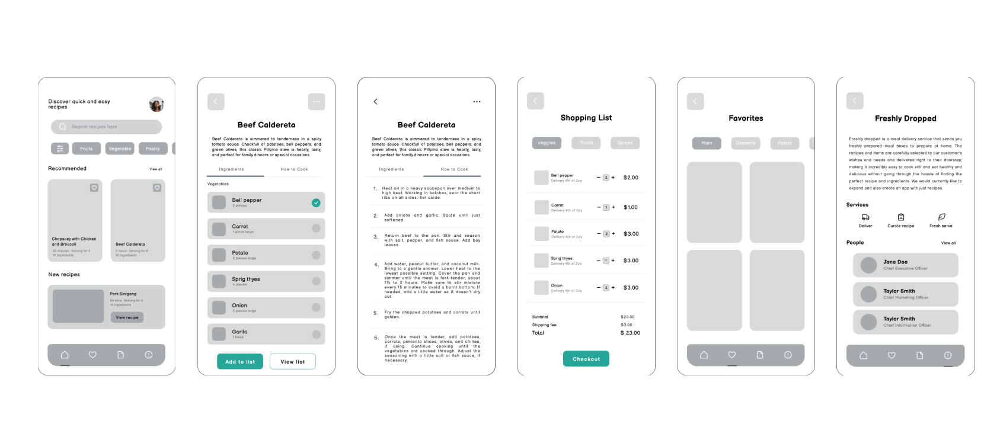
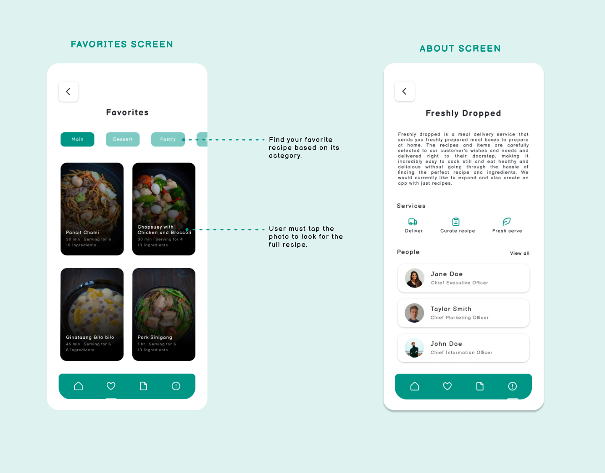
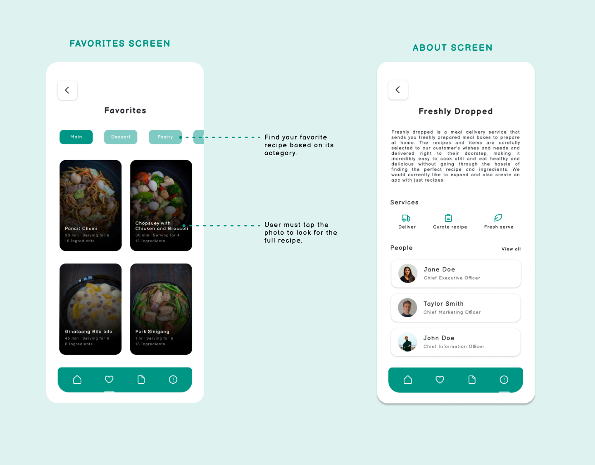

Design to communicate, not just decorate.
-Tony Stanton
Get in Touch
Let's make something more meaningful and user-friendly by making things more visual and conceptual.
josephine.falejo.yee@gmail.com

Freshly Dropped, a food delivery service, aims to develop a recipe-only application to encourage individuals to cook on their own terms. Users can select meals and then opt to either order the ingredients through Freshly Dropped or procure them by grocery shopping themselves. This project serves as a personal endeavor to improve my design thinking and problem-solving skills..
Create a mobile application enabling users to scan recipes and decide whether to order ingredients via the Freshly Dropped service.
The process consists of the following stages: discovery, ideation, design, and testing. Below, I'll elaborate on my approach to completing this project.
Prior to ideation, I initiated an analysis of the services provided by the client. As per the client's specifications, the app design was required to incorporate the following functionalities.
Suggested a design that offers swift access to essential sections such as home, favorites, shopping list, and about.
I devised task flows outlining the steps a user typically follows to accomplish two common tasks in Freshly Dropped
To aid in visualizing the screens users will interact with, I began by crafting low-fidelity designs for various screen scenarios.



Following the sketching of low-fidelity screens, I then implement my style guide onto the wireframes to transform them into visual designs.
The app comprises five primary screens: home, favorites, shopping list, about, and recipe. The default screen, which is the home screen, features a navigation bar at the bottom displaying four destinations. Each destination is represented by an icon, and the four tab options are:
The subsequent sequence of steps that users undertake to accomplish their objectives is detailed here. The pages, logic, and actions necessary to achieve the goal are depicted in the user flow.


 

Here is the reasoning behind my design choices for the interface: